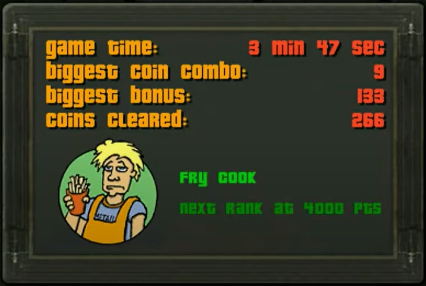
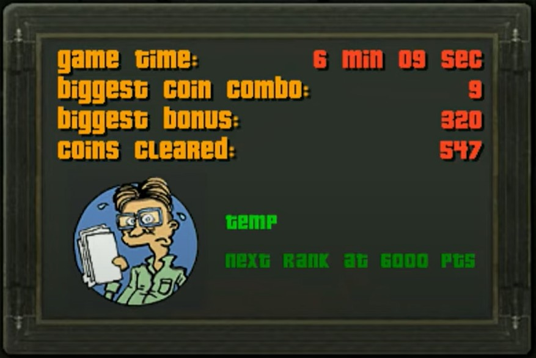
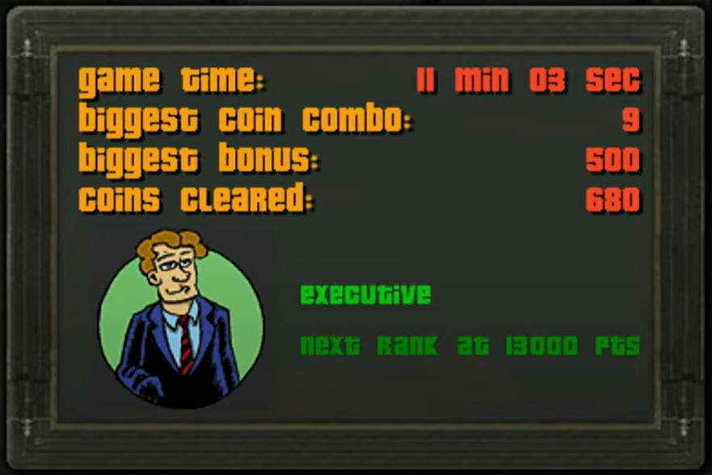

How the creators used Sound and Career Status to replicate the fealing of working for a living
With this site I will explore the symbolism created with sound and career stages that makes this game highly relatable. The theme song is an adaptation of Peter Gabriel's song Big Time.
Let's compare the real song to the animated theme song below:
The song lyrics in "Big Time" describes Peter struggling to financially. Dreaming of one day becoming famous and making a lot of money. Hence the perfect theme and phycological inspiration for the feeling captured by the game
As you advance through stages of the game your salary increases. The game labels you with hilarious graphics to describe your growing career level starting as a "pauper"

 
The game is played by matching groups of three or more colorful coins to make them dissappear before the levels reach the top of the screen
There is a stereotypical banker smoking a fat cigar who challenges you to see if you have what it takes to earn big money and advance in your career
The game is fast paced, colorful, and has several different modes that allow you to play an indefinite amount of levels.
The nonsensical adaptations of cartoon career models are akin to the unvarnished representation of reality that connect to subconscious pictures in our mind bearing a striking resemblance to real individuals we all encounter on the job or in life.
Thus making the gaming experience an "effet de reel' as we explored in R. Barthes essayThe Reality Effect (NOTE1).
I highly recommend this game for HOURS of fun. No matter how long you play, you can discover a new career status in each session to keep you laughing and comparing the characters with people from your own life